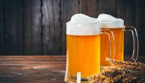
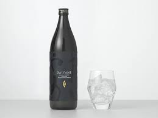
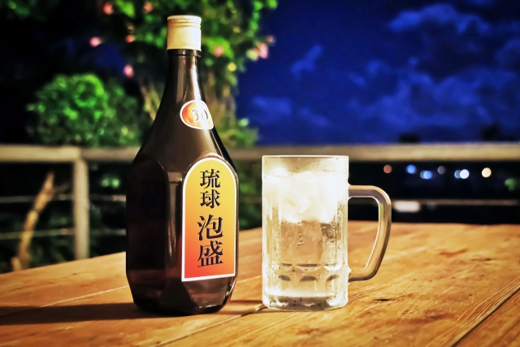

お酒のはじまり

ビール

日本酒

焼酎

泡盛
お酒の起源は古く、その始まりは農耕が始まる以前まで遡ると言われています。向精神薬とまで言われるお酒は、昔から人類に寄り添ってその文化を醸造してきました。お酒には国、文化、宗教によって様々な親しまれ方があります。ダミーダミーダミーダミーダミーダミーダミーダミーダミーダミーダミーダミーダミーダミーダミーダミーダミーダミーダミーダミーダミーダミーダミーダミーダミーダミーダミーダミーダミーダミーダミーダミーダミーダミーダミーダミーダミーダミーダミーダミーダミーダミーダミーダミーダミーダミーダミーダミーダミーダミーダミーダミーダミーダミー。
この文章はダミーです。文字の大きさ、量、字間、行間等を確認するために入れています。この文章はダミーです。この文章はダミーです。文字の大きさ、量、字間、行間等を文字の大きさ、量、字間、行間等を。
この文章はダミーです。文字の大きさ、量、字間、行間等を確認するために入れています。この文章はダミーです。文字文字の大きさ、量、字間、行間等を確認するために入れています。この文章はダミーです。文字の大きさ、量、字間、行間等を。文字の大きさ、量、字間、行間等を文字の大きさ、量、字間、行間等を。文字の大きさ、量、字間、行間等を。